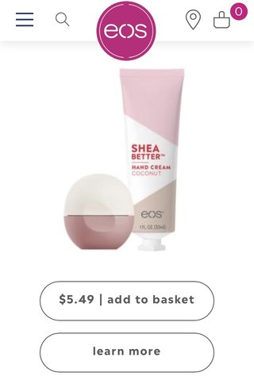
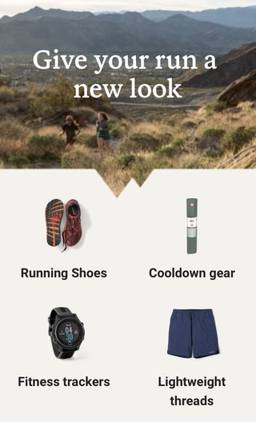
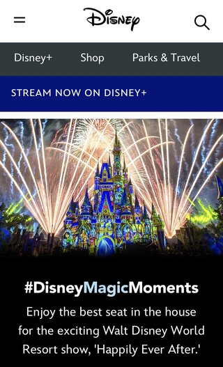

White Space
Evolution of Smooth
Eos's homepage White space is used generously in this image around the product, header, and buttons. The screen doesn't feel cluttered, busy, or distracting, but open, relaxing, and inviting. The simplicity allows your mind to breathe.
Proximity
REI Co-op
REI's homepage The grouping of the products at the bottom of this media screen demonstrate good proximity. We know which image belongs with which description, and the division has also made it easier to read and understand the content of the page.
Alignment
Disney
Disney's homepage On this media page, Disney has increased our ability to navigate and comprehend the layout of the page by aligning similar elements in horizontal lines. All of the menu functions are aligned with one another, along with the text, logo and search icon, and image.